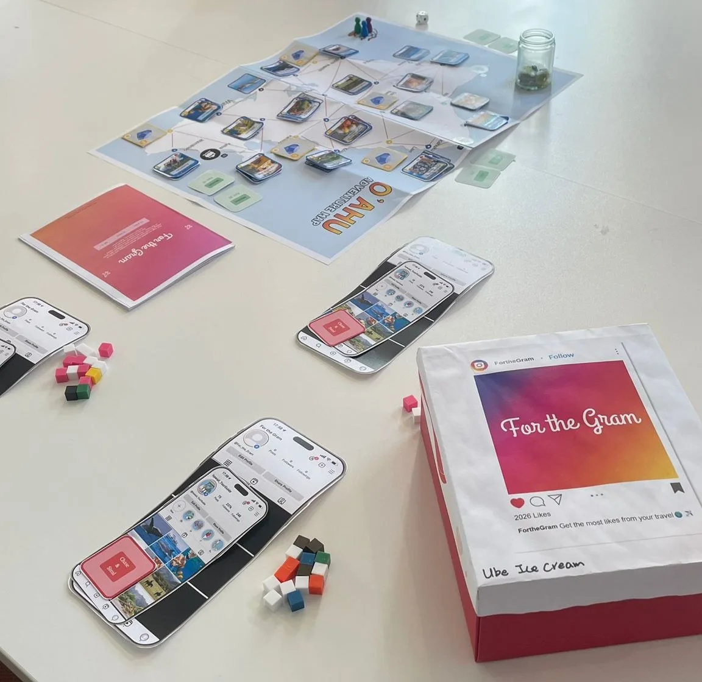
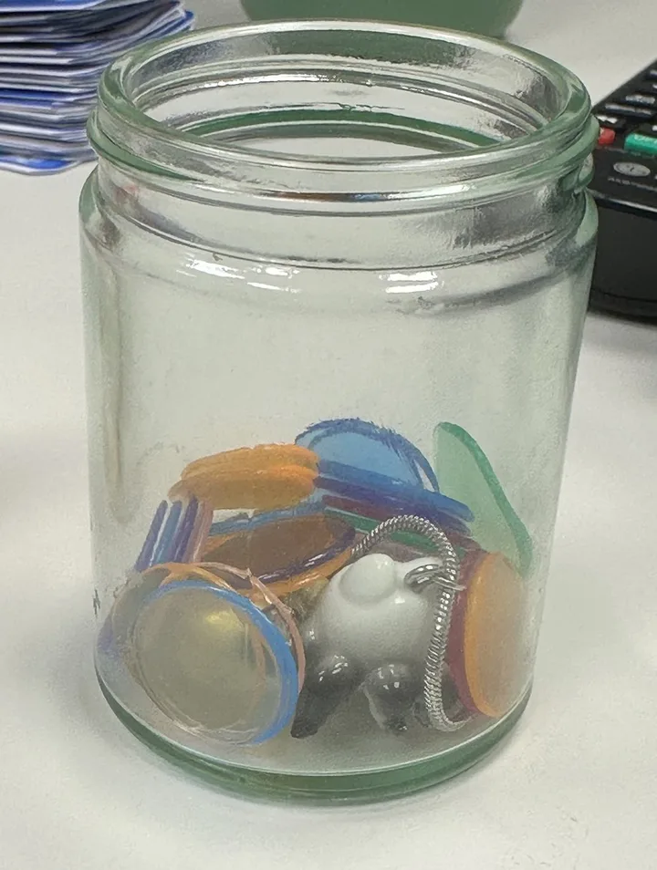

- 1 快速浏览：页首摘要Quick scan: the summary above
- 2 核心故事：正文Core story: the main text
- 3 深入查看：折叠的方法、数据与理论Deep dive: folded methods, data and theory
01为什么追逐热点的旅行值得关注Why trend-chasing travel matters
它会以旅行者看不到的方式伤害当地。It harms places in ways travellers do not see.
团队的出发点是：社交媒体左右着人们去哪里，打卡热门景点可能成为旅行的目的。这款游戏面向去欧胡岛的 Gen Z 旅行者；在那里，旅游可能冒犯夏威夷文化、打扰野生动物、破坏脆弱的自然区域。The team’s starting point: social media shapes where people go, and checking off a trending spot can become the purpose of the trip. The game targets Gen Z travellers on O‘ahu, where tourism can disrespect Hawaiian culture, disturb wildlife and damage fragile natural areas.
两个数字均来自团队文稿中引用的一份 Statista 汇总（Hinton, 2024）。使用场景：游客中心或酒店，由当地机构安装游戏，这是团队设想的情境。Both figures from a Statista summary cited in the team deck (Hinton, 2024). Setting: a tourist centre or hotel, with the game installed by a local agency, as the team imagined it.
三个障碍决定了游戏要改变什么Three barriers set what the game has to change
| 障碍Barrier | 游戏作用的层面Level the game works on | 它应当为玩家做什么What it should do for the player |
|---|---|---|
| 不了解：旅行者可能并不知道自己行为的后果Unfamiliarity: travellers may not know the consequences of what they do | 知识Knowledge | 帮助玩家理解“走马观花”式旅游对文化、环境和社会造成的伤害Help players understand the cultural, environmental and social harm of mindless tourism |
| 道德脱离：别人都这么做时，不负责任的行为看起来就很正常Moral disengagement: irresponsible behaviour looks normal when others do it | 态度倾向Disposition | 揭示后果，引发自我反思与自我调节Reveal consequences to trigger self-reflection and self-regulation |
| 错失恐惧（FOMO）与追随潮流FOMO and trend following | 信念Belief | 让玩家从追随潮流的心态，转向有意识的旅行Shift players from a trend-following mindset toward intentional travel |
两个关于游戏影响力的理论，直接对应设计决策。程序修辞：奖励玩家去追逐点赞，再揭示其伤害，让机制本身来表达观点。共情机器：揭示应让玩家站到受影响居民的位置上。Two game-impact theories sit directly on the design decisions. Procedural rhetoric: reward players for chasing likes, then reveal the harm, so the mechanics themselves make the argument. Empathy machines: the reveal should put players in the position of the residents affected.
02我的部分：团队设计中的三项机制My part: three mechanics inside a team design
我负责Mine
- 地图基础机制：玩家移动所依托的地图与路线结构。Base map mechanic: the map and route structure players move across.
- Instagram 累积机制：玩家通过收集帖子和点赞，搭建自己的主页。Instagram accumulation mechanic: players build their own profile by collecting posts and likes.
- 花费反馈：玩家把花掉的钱放进玻璃瓶；到结尾，这些钱被揭示为这趟旅行造成的环境伤害。Spending feedback: players put what they spend into a glass jar; at the end it is revealed as the environmental harm their trip caused.
团队负责Team
- 可玩性机制（例如“追逐与抢夺”、任务卡、阶梯式奖励）与实体制作Playability mechanics (for example Chase & Steal, mission cards, tiered rewards) and the physical production
- 组织试玩并决定如何调整方向Running the playtests and deciding how to change course

- 基础地图 奥胡岛地图，以及玩家移动所依据的路线结构。Base map The O‘ahu map and the route structure players move across.
- Instagram 累积 每位玩家手机上的主页，随着收集到的帖子和点赞逐步充实。Instagram accumulation Each player’s phone profile fills with the posts and likes they collect.
- 花费反馈 玩家的花费投入地图旁的玻璃瓶；游戏结尾，它被揭示为这趟旅行造成的伤害。Spending feedback What players spend goes into the glass jar beside the map; at the end it is revealed as the harm their trip caused.

03游戏如何运作How the game works
看上去是追逐点赞，结尾却揭示出代价。It looks like like-chasing and ends as a reveal of cost.
玩家看到的是一款竞争性的旅行游戏：规划路线、认领帖子、收集点赞。直到结尾他们才会看到真正的目的，也就是自己追逐点赞留下的影响。表面上的策略玩法让他们对此毫无察觉。Players see a competitive travel game: plan a route, claim posts, collect likes. What they do not see until the end is the real purpose, showing the impact their like-chasing leaves behind. Strategic play on the surface keeps them from suspecting it.
04从试玩到改动From playtests to changes
每一次重大改动，都能追溯到试玩中观察到的某件事。Each major change traces back to something observed in a playtest.
团队在第 0 到第 4 轮之后各做了一次评估，改动落在下一轮。评估来自不同来源，下文分别标注：团队自己的复盘、团队之外的玩家，以及助教。它们都是定性且非正式的。The team ran an evaluation after rounds 0 to 4, and its changes landed in the next round. Evaluations came from different sources and are labelled below: the team’s own review, players outside the team, and teaching assistants. They are qualitative and informal.
第 0 轮 · 揭示能告知，但不能教会Round 0 · Reveal informs, does not teach
玩家喜欢互相猜测，但读到后果卡片，既没有让他们明白可以怎么做，也没有让他们感受到那是什么感觉。Players enjoyed predicting each other, but reading a consequence card taught them neither what to do instead nor how it felt.
早期试玩 团队文稿中未记录反馈来源Early playtest Feedback source not recorded in the team deck
最初的游戏里，玩家同时选择“好”或“坏”的行动卡；如果超过两人选了同一张牌，就发生过度旅游，并翻开该牌阅读后果。猜测他人选择的心理博弈很有趣。但揭示缺乏教育意义和情感共鸣：玩家知道了后果，却不知道可以怎样用有意识的行动来避免。In the initial game, players chose “good” or “bad” action cards at the same time; if more than two chose the same card, overtourism occurred and the card was flipped to read its consequences. The mind game of predicting others’ choices was fun. The reveal lacked education and emotional resonance: players learned the consequences but not the mindful actions that prevent them.
只陈述后果的揭示是不够的。它需要说明可以改做什么，并让后果更加具体可感。A reveal that only states consequences is not enough. It needs to show what to do instead, and make the consequence more tangible.
- 独自出行者的后果卡现在会写明推荐的有意识行为。Consequence cards for a lone traveller now name the recommended mindful behaviour.
- 每个城市增设一个当地人角色，试图阻止过度旅游，成功时可获得爱心。A Local role per city tries to block overtourism and earns hearts when it succeeds.
下一轮的反馈认为，这些行动和后果取材于真实问题。文稿没有分别评估“当地人”角色和有意识的行为建议。The next round’s feedback said the actions and consequences were grounded in real issues. The deck does not evaluate the Local role or the mindful advice separately.
第 1 轮 · 猜起来有趣，但太容易被猜到Round 1 · Fun to predict, but too predictable
玩家觉得内容真实，但选择太容易预测：大多数人直接拿爱心最多的那张牌。Players found the content real but the choices predictable: most simply took the card with the most hearts.
非小组成员 团队之外的玩家Non-group members Players from outside the team
优点：行动和后果基于真实问题，有助于代入情境和教育。不够好玩、策略有限：他人的选择很容易预测（很可能是爱心最多的那张牌），唯一的决定是跟随这个选择，还是赌一把做“落单的旅行者”，而可用的行动取决于运气。Good: the actions and consequences are based on real issues, which helps contextualisation and education. Not fun, with limited strategy: others’ choices were easy to predict (likely the card with the most hearts), the only decision was whether to follow that or gamble on being the lone traveller, and the available actions were down to chance.
游戏需要更多策略性的选择，但团队的问题是：如何在不丢掉教育重点的前提下做到这一点。The game needs more strategic choice, but the team asked how to get it without losing the educational point.
- 尝试加入额外限制（时间、金钱），引入资源管理。Explored added constraints (time, money) to introduce resource management.
- 尝试引入竞价机制，加剧对行动的争夺。Explored a bidding mechanism to intensify competition for actions.
下一轮中团队自己的复盘认为，新增的“趣味”元素并不能促成转变，反而稀释了教育意义。The team’s own review in the next round concluded that the added “fun” elements did not support the transformation and diluted the education.
第 2 轮 · 趣味正在稀释初衷Round 2 · Fun was diluting the purpose
团队判断，自己加入的趣味元素正在把游戏从初衷上拉开，于是回到最初的问题。The team judged that the fun elements it had added were pulling the game away from its purpose, and went back to the original problem.
团队自己的复盘 内部评估，不是玩家反馈Team’s own review Internal evaluation, not player feedback
新增的策略元素不一定能促成转变。它们稀释了教育意义，玩法也过度聚焦于过度旅游，而偏离了游戏本来要聚焦的问题。The added strategic elements did not necessarily support the transformation. They diluted the education, and the gameplay had become too focused on overtourism rather than the issues the game was meant to centre on.
“我们想要解决的主要问题是什么？”答案是追随潮流和不负责任的行为，而不是过度旅游。“What is the main issue we are trying to address?” The answer was trend following and irresponsible actions, not overtourism.
- 不再把过度旅游作为核心机制。Dropped overtourism as the core mechanic.
- 改为结尾出其不意的大揭示：第一轮追随潮流、搭建 Instagram 主页；然后揭示；然后重玩一次，这次不造成伤害。团队提到桌游 Train 是这种出其不意式揭示的灵感来源。Moved to a blind-sided big reveal at the end: first round, follow trends to build an Instagram profile; then the reveal; then replay without causing damage. The team cites the board game Train as inspiration for the blind-sided reveal.
- 采用追逐点赞、路线规划和步数限制。Adopted like-chasing, route planning and a step constraint.
下一轮中助教的反馈：喜欢亲手搭建主页，并认为翻牌揭示“似乎有效”。Teaching-assistant feedback in the next round liked physically building the profile and found the flip-to-reveal “seems to work”.
第 3 轮 · 揭示有效，其余部分太慢Round 3 · Reveal works; the rest is slow
助教确认揭示有效，但觉得节奏慢、策略少，第二轮显得多余。Teaching assistants confirmed the reveal worked but found play slow, with little strategy, and the second round redundant.
助教（GTA） 课程教学人员，不是目标玩家Teaching assistants (GTAs) Course teaching staff, not target players
喜欢的：亲手搭建自己的 Instagram 主页；第一轮结尾的翻牌揭示似乎有效。需要改进的：步数限制限制了玩家探索的范围，每回合一步让节奏显得慢，路线规划几乎没有策略选择，第二轮因为揭示已经完成了任务而显得重复。Liked: physically building your own Instagram profile; the flip to reveal at the end of the first round seems to work. Needs work: step constraints limited where players could explore, play felt slow at one step per turn, route planning involved little strategic choice, and the second round felt repetitive because the reveal already did its job.
保留揭示与实体主页。让节奏更快、更有策略性，并去掉多余的第二轮。Keep the reveal and the physical profile. Make play faster and more strategic, and drop the redundant second round.
- 阶梯式奖励：每个地点有两个帖子，先认领者获得更多点赞。Tiered rewards: two posts per location, the first to claim earns more likes.
- 主要约束由步数改为金钱（一步 = 一枚硬币），玩家一回合可以跨越多步。Main constraint changed from steps to money (one step = one coin), so players can jump several steps in a turn.
- 限定为一轮加大揭示；“隐藏宝地”移入这一轮，以展示探索的正面结果。Limited to one round plus the big reveal; the “hidden gem” moved into that round to show a positive outcome of exploration.
事先不了解游戏的同伴喜欢亲手搭建的过程，觉得一轮加揭示已足以起到教育作用，并在金钱约束下探索得更多。Peers with no prior knowledge enjoyed the physical building, felt one round plus reveal served the education function, and explored more under the money constraint.
第 4 轮 · 揭示还不够有分量Round 4 · Reveal is not big enough
揭示没有让玩家产生足够的感受，游戏也变成了各玩各的“单人征服”。The reveal did not make players feel enough, and play became solo conquest.
事先不了解游戏的同伴 + 内部试玩 外部玩家与团队自己的试玩Peers with no prior knowledge + internal playtests External players and the team’s own sessions
事先不了解游戏的同伴喜欢搭建主页，也喜欢隐藏宝地。但在揭示时，他们了解到后果，却没有足够的共情或愧疚。内部试玩发现玩家之间几乎没有互动：玩家各自分散、独自征服，15 枚硬币的额度让人没有余地去挡别人的路，帖子的布置也需要仔细规划以保证公平。Peers with no prior knowledge enjoyed building the profile and liked the hidden gem. But at the reveal they learned the consequences without enough empathy or guilt. Internal playtests found little player-versus-player interaction: players spread out and conquered alone, the 15-coin allowance left no room to get in others’ way, and posts needed careful mapping for fairness.
揭示需要被“感受到”，而不只是被“读到”；玩家还需要在地图上相遇的理由。The reveal needs to be felt, not only read, and players need reasons to meet on the map.
- 玩家对环境的揭示：玩家每次为行动付费，硬币都会放进一个玻璃瓶。到结尾，原本看似经济上的富足，被揭示为伤害，硬币把城市模型一点点埋住。Player-versus-environment reveal: every time players pay for an action the coins go into a glass jar. At the end, what looked like economic richness is revealed as damage, with coins burying the city representations.
- 追逐与抢夺和任务卡给了玩家穿越全岛、互相干预的理由。Chase & Steal and mission cards give players reasons to cross the island and interfere with each other.
尚未观察到。最终版本没有评估，所以新的揭示是否会带来更多共情或愧疚，还未经验证。Not yet observed. There is no evaluation of the final version, so whether the new reveal creates more empathy or guilt is unvalidated.
最终版本 尚未评估，因此没有任何一轮能说明最后这项改动是否有效。Final version Not yet evaluated, so no round shows whether the last change worked.
05团队的经验The team’s lesson
守住初衷，让趣味服务于它。Keep the purpose fixed and let fun serve it.
团队文稿自己的反思总结了三条经验，它们也塑造了后面的几轮。The deck’s own reflection names three lessons, which also shaped later rounds.
- 转变优先。追求趣味让团队忘记了想要产生的影响。变革性游戏需要一个明确的目标，并让它始终作为每个机制的参照。Transformation priority. Chasing fun made the team lose sight of the impact it wanted. A transformational game needs a clearly defined purpose that stays the reference point for every mechanic.
- 趣味优先，但要服务于目标。教育类游戏首先必须有吸引力，但团队最初基于嵌入式设计模型的机制没有足够吸引玩家。转向程序修辞，让有趣的玩法与想传达的信息连在一起。Fun first, but in service of the aim. An educational game must first be engaging, yet its first mechanic, based on the Embedded Design Model, did not engage players enough. Moving to procedural rhetoric connected enjoyable play to the intended message.
- 避免强行灌输。玩家应当在游玩中，通过系统、选择与后果自己领悟意义，而不是被告知。Avoid forceful education. Players should arrive at meaning through play, through systems, choices and consequences, rather than being told.
06尚未验证Not yet validated
揭示是否会改变玩家的想法。Whether the reveal changes how players think.
最终版本（含玩家对环境的揭示、追逐与抢夺、任务卡）没有评估环节。我无法说它是否带来了它所追求的共情或愧疚，也无法说它是否影响真实的旅行选择。前面几轮显示的是团队看到了什么、改了什么，并不证明这些改动有效。The final version, with the player-versus-environment reveal, Chase & Steal and mission cards, has no evaluation round. I cannot say whether it creates the empathy or guilt it aims for, or whether it affects real travel choices. Earlier rounds show what the team saw and changed, not that the changes worked.
- 反馈来自团队、同课程的同学和助教，而不是目标旅行者的样本，也没有统计玩家人数。Feedback came from the team, course peers and teaching assistants, not from a sample of the target travellers, and players were not counted.
- 第 4 轮赛后访谈没有测量玩家之后的感受。The round-4 post-game interview did not measure what players felt afterwards.
团队计划中的下一步Next steps in the team’s plan
- 利用玩家数据平衡硬币经济与路线距离。Balance the coin economy and route distances using player data.
- 增加欧胡岛以外的目的地，以及同一行动的“合乎伦理”与“不合乎伦理”成对版本。Add destinations beyond O‘ahu and paired ethical and unethical versions of the same action.
- 做更多试玩，检验揭示能否稳定产生预期的情感反应，并开展对真实旅行行为的纵向研究。More playtests of whether the reveal consistently produces the intended emotional response, and a longitudinal study of real travel behaviour.